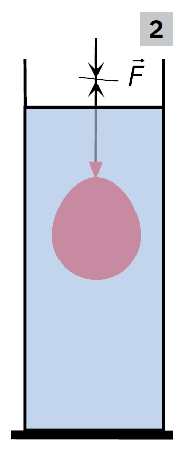
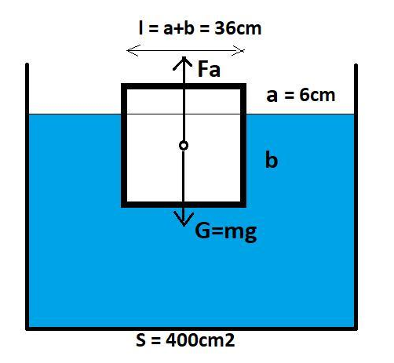
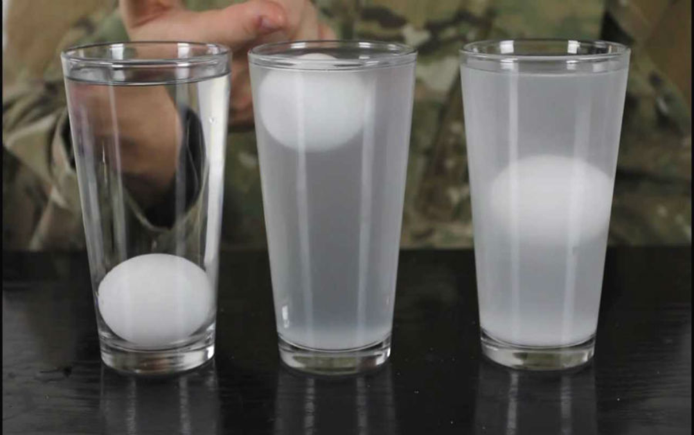
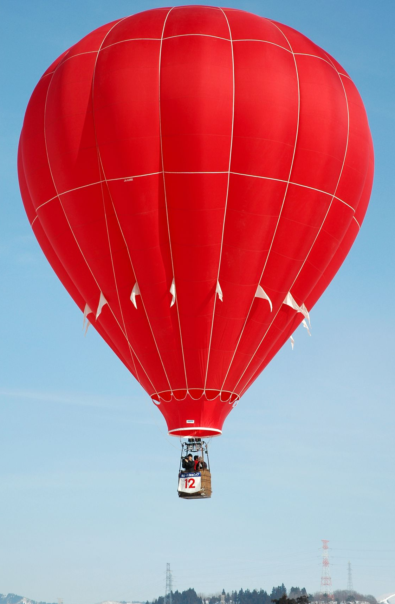

Lecția 4
Legea lui Arhimede. Aplicații
Vei înțelege de ce un corp pare mai ușor în apă, de ce plutesc unele corpuri și de ce un balon cu heliu se ridică în aer.
Un corp pare mai ușor în apă
Ține un obiect agățat de un dinamometru. Citește indicația în aer, apoi introdu obiectul în apă.
În aer
Dinamometrul arată greutatea corpului.
În apă
Dinamometrul arată o valoare mai mică, numită greutate aparentă.
Două forțe principale
Asupra corpului scufundat acționează greutatea, în jos, și forța arhimedică, în sus.

De ce apare împingerea în sus?
Presiunea hidrostatică crește cu adâncimea. De aceea, lichidul apasă mai tare pe partea de jos a corpului decât pe partea de sus.
Legea lui Arhimede
Ce este fluidul?
Un lichid sau un gaz. Apa și aerul sunt fluide.
Ce înseamnă „dezlocuit”?
Volumul de fluid dat la o parte de corp.
Forța arhimedică
Greutatea fluidului dezlocuit se poate calcula folosind densitatea fluidului, volumul dezlocuit și \(g\).
densitatea fluidului, în \(\frac{kg}{m^3}\)
volumul de fluid dezlocuit, în \(m^3\)
aproximativ \(10\,\frac{N}{kg}\)
forța arhimedică, în newtoni \((N)\)
Calculăm forța arhimedică
Un corp este scufundat complet în apă și dezlocuiește \(200\,cm^3\) de apă. Considerăm:
Când plutește un corp?
Comportarea corpului depinde de comparația dintre greutatea lui \(G\) și forța arhimedică \(F_A\).
\(G>F_A\)
Greutatea este mai mare. Corpul se scufundă.
\(G=F_A\)
Forțele se compensează. Corpul plutește în echilibru.
\(G
Împingerea în sus este mai mare. Corpul urcă spre suprafață.
Împingerea în sus este mai mare. Corpul urcă spre suprafață.
Atenție
Nu este nevoie de simboluri complicate: ne uităm care forță este mai mare.
Densitatea explică plutirea
În multe situații, putem prezice comportarea unui corp comparând densitatea corpului cu densitatea lichidului.

\(\rho_c<\rho_l\)
Corpul poate pluti la suprafață, parțial scufundat.
\(\rho_c>\rho_l\)
Corpul se scufundă.
Arhimede în viața reală
Navă
O navă dezlocuiește multă apă, astfel încât împingerea apei poate egala greutatea navei.
Submarin
Își schimbă densitatea medie prin umplerea sau golirea tancurilor cu apă.
Densimetru
Plutește diferit în lichide cu densități diferite și ajută la măsurarea densității.
Balon cu heliu
Aerul împinge balonul în sus, iar heliul are densitate mai mică decât aerul.
Plutire în lichide și gaze


Arhimede și volumul unui corp
Legenda spune că Arhimede a observat că, atunci când un corp intră în apă, acesta dă la o parte un volum de apă. Această idee ajută la determinarea volumului corpurilor cu formă neregulată.
Problemă rezolvată
Un corp are greutatea în aer \(G=6\,N\). În apă, dinamometrul arată \(G_a=4\,N\). Află forța arhimedică.
Apa împinge corpul în sus cu \(2\,N\), de aceea dinamometrul indică mai puțin.
Alege varianta corectă
1. Forța arhimedică are sensul:
Formula și plutirea
2. Formula forței arhimedice este:
3. Un corp plutește în echilibru când:
Ce trebuie să rămână clar
- Forța arhimedică împinge corpul vertical de jos în sus.
- Valoarea ei este egală cu greutatea fluidului dezlocuit.
- Formula este \(F_A=\rho_f V_{\text{dezlocuit}}g\).
- Dacă \(G>F_A\), corpul se scufundă.
- Dacă \(G=F_A\), forțele se compensează și corpul plutește în echilibru.
- Dacă \(G